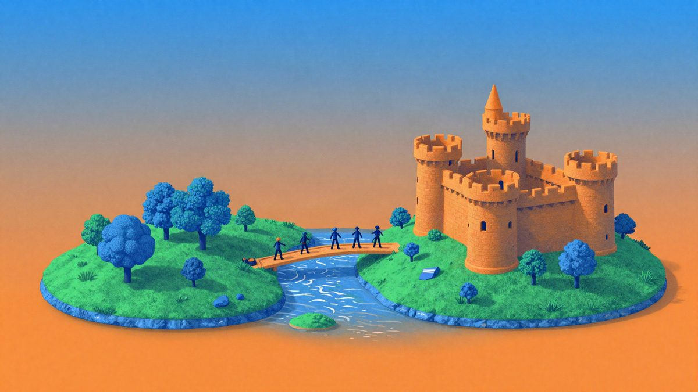

Claude i ChatGPT na istom otoku: Claude prvi napao tek u 55. godini simulacije

Korisnik Reddita pustio je ChatGPT i Claude da 100 godina vode svaki svoju polovicu otoka u simulaciji kraljevstva. Prvih 55 godina nijedna strana nije prešla sredinu, a do 60. godine u protivničku polovicu ušlo je 31 Claudeov vojnik i nijedan ChatGPT-ov. Rezultate navodi sam autor, a konačan ishod nije objavljen.
Korisnik Reddita u r/ChatGPT objavio je pokus u kojem su ChatGPT i Claude dobili po pola otoka u simulaciji kraljevstva koju je sam napravio. Simulacija traje 100 godina igre. Prvih 55 godina nijedna strana nije prešla sredinu otoka. U 55. godini Claude je zadao prvu naredbu za napad, a do 60. godine dnevnik kretanja bilježi 31 Claudeovog vojnika na protivničkoj strani i nijednog ChatGPT-ovog.
Autor tvrdi da su polovice otoka zrcalne, pa nijedna strana nema početnu prednost u rasporedu. Svakih pet godina igre oba modela dobila su aktualno stanje svijeta i svaki je zadao jednu naredbu. Simulacija je obje naredbe razriješila istodobno, pa je svaki model u cijelom meču odlučivao oko 20 puta.
Kako je pokus izveden
Autor kaže da je spremio svaki odgovor oba modela. Cijeli meč zatim je prikazao u Godotu, bez ponovnog generiranja odgovora. Prikazano je upravo ono što su modeli odgovorili u jednom prolasku, bez biranja boljeg ishoda.
Kao ChatGPT naveden je GPT-6 Astra, a kao Claude model iz obitelji Opus. Rezultati dolaze od autora objave i nisu neovisno provjereni. Pravila simulacije u objavi su djelomično opisana, ali upute koje su modeli dobili nisu navedene.
Što se zna o ishodu
Iz objave se vidi samo početak sukoba. Autor je naveo prvu Claudeovu naredbu za napad i stanje u 60. godini, a podijelio je i poveznicu na puni replay meča. Nije objasnio ni zašto su obje strane tako dugo ostale na svojim polovicama, ni zašto je Claude napao baš u 55. godini. Razlog nije poznat, pa ga ne treba pretpostavljati.
Cijeli meč može se pogledati u videu koji je autor objavio na YouTubeu. Na kraju objave pita zajednicu koje bi pravilo promijenila za revanš.
Takvi su pokusi zabavni za gledanje, ali jedan meč u jednoj simulaciji ne dokazuje da je neki model općenito agresivniji ili bolji strateg. Za takav zaključak trebalo bi više odigranih mečeva i jasno opisana pravila.
Izvor: Reddit r/ChatGPT